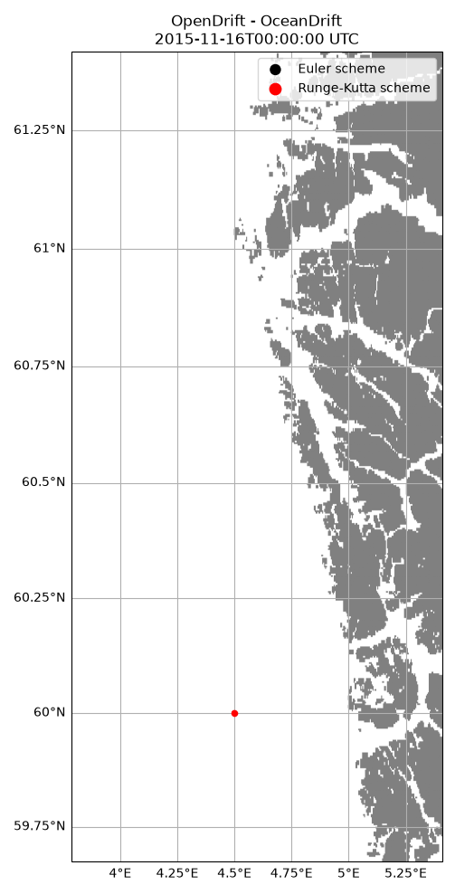

Note
Go to the end to download the full example code.
Runge-Kutta scheme on Norkyst model
Illustrating the difference between Euler and Runge-Kutta propagation schemes, using a “real” current fields from the NorKyst800 model
from opendrift import test_data_folder as tdf
from opendrift.readers import reader_global_landmask
from opendrift.readers import reader_netCDF_CF_generic
from opendrift.models.oceandrift import OceanDrift
o = OceanDrift(loglevel=20) # Set loglevel to 0 for debug information
reader_norkyst = reader_netCDF_CF_generic.Reader(tdf +
'16Nov2015_NorKyst_z_surface/norkyst800_subset_16Nov2015.nc')
time = reader_norkyst.start_time
reader_landmask = reader_global_landmask.Reader()
o.add_reader([reader_norkyst, reader_landmask])
lon = 4.5; lat = 60.0;
17:03:10 INFO opendrift:569: OpenDriftSimulation initialised (version 1.14.11 / v1.14.12-66-g07283eb)
17:03:10 INFO opendrift.readers:67: Opening file with xr.open_dataset
17:03:11 INFO opendrift.readers.reader_netCDF_CF_generic:340: Detected dimensions: {'x': 'X', 'y': 'Y', 'z': 'depth', 'time': 'time'}
First run, with Euler scheme:
o.set_config('drift:advection_scheme', 'euler')
o.seed_elements(lon, lat, radius=0, number=1, time=time)
o.run(steps=66*2, time_step=1800)
17:03:16 INFO opendrift.models.basemodel.environment:227: Fallback values will be used for the following variables which have no readers:
17:03:16 INFO opendrift.models.basemodel.environment:230: sea_surface_height: 0.000000
17:03:16 INFO opendrift.models.basemodel.environment:230: x_wind: 0.000000
17:03:16 INFO opendrift.models.basemodel.environment:230: y_wind: 0.000000
17:03:16 INFO opendrift.models.basemodel.environment:230: upward_sea_water_velocity: 0.000000
17:03:16 INFO opendrift.models.basemodel.environment:230: ocean_vertical_diffusivity: 0.000000
17:03:16 INFO opendrift.models.basemodel.environment:230: horizontal_diffusivity: 0.000000
17:03:16 INFO opendrift.models.basemodel.environment:230: sea_surface_wave_significant_height: 0.000000
17:03:16 INFO opendrift.models.basemodel.environment:230: sea_surface_wave_stokes_drift_x_velocity: 0.000000
17:03:16 INFO opendrift.models.basemodel.environment:230: sea_surface_wave_stokes_drift_y_velocity: 0.000000
17:03:16 INFO opendrift.models.basemodel.environment:230: ocean_mixed_layer_thickness: 50.000000
17:03:16 INFO opendrift.models.basemodel.environment:230: sea_floor_depth_below_sea_level: 10000.000000
17:03:16 INFO opendrift:1911: Skipping environment variable ocean_vertical_diffusivity because of condition ['drift:vertical_mixing', 'is', False]
17:03:16 INFO opendrift:1911: Skipping environment variable ocean_mixed_layer_thickness because of condition ['drift:vertical_mixing', 'is', False]
17:03:16 INFO opendrift:1922: Storing previous values of element property lon because of condition (('general:coastline_action', 'in', ['stranding', 'previous']), 'or', ('general:seafloor_action', 'in', ['previous']))
17:03:16 INFO opendrift:1922: Storing previous values of element property lat because of condition (('general:coastline_action', 'in', ['stranding', 'previous']), 'or', ('general:seafloor_action', 'in', ['previous']))
17:03:16 INFO opendrift:1930: Storing previous values of environment variable sea_surface_height because of condition ['drift:vertical_advection', 'is', True]
17:03:16 INFO opendrift:958: Using existing reader for land_binary_mask to move elements to ocean
17:03:16 INFO opendrift:990: All points are in ocean
17:03:16 INFO opendrift:2238: 2015-11-16 00:00:00 - step 1 of 132 - 1 active elements (0 deactivated)
17:03:16 INFO opendrift:2238: 2015-11-16 00:30:00 - step 2 of 132 - 1 active elements (0 deactivated)
17:03:16 INFO opendrift:2238: 2015-11-16 01:00:00 - step 3 of 132 - 1 active elements (0 deactivated)
17:03:16 INFO opendrift:2238: 2015-11-16 01:30:00 - step 4 of 132 - 1 active elements (0 deactivated)
17:03:17 INFO opendrift:2238: 2015-11-16 02:00:00 - step 5 of 132 - 1 active elements (0 deactivated)
17:03:17 INFO opendrift:2238: 2015-11-16 02:30:00 - step 6 of 132 - 1 active elements (0 deactivated)
17:03:17 INFO opendrift:2238: 2015-11-16 03:00:00 - step 7 of 132 - 1 active elements (0 deactivated)
17:03:17 INFO opendrift:2238: 2015-11-16 03:30:00 - step 8 of 132 - 1 active elements (0 deactivated)
17:03:17 INFO opendrift:2238: 2015-11-16 04:00:00 - step 9 of 132 - 1 active elements (0 deactivated)
17:03:17 INFO opendrift:2238: 2015-11-16 04:30:00 - step 10 of 132 - 1 active elements (0 deactivated)
17:03:17 INFO opendrift:2238: 2015-11-16 05:00:00 - step 11 of 132 - 1 active elements (0 deactivated)
17:03:17 INFO opendrift:2238: 2015-11-16 05:30:00 - step 12 of 132 - 1 active elements (0 deactivated)
17:03:17 INFO opendrift:2238: 2015-11-16 06:00:00 - step 13 of 132 - 1 active elements (0 deactivated)
17:03:17 INFO opendrift:2238: 2015-11-16 06:30:00 - step 14 of 132 - 1 active elements (0 deactivated)
17:03:17 INFO opendrift:2238: 2015-11-16 07:00:00 - step 15 of 132 - 1 active elements (0 deactivated)
17:03:17 INFO opendrift:2238: 2015-11-16 07:30:00 - step 16 of 132 - 1 active elements (0 deactivated)
17:03:17 INFO opendrift:2238: 2015-11-16 08:00:00 - step 17 of 132 - 1 active elements (0 deactivated)
17:03:17 INFO opendrift:2238: 2015-11-16 08:30:00 - step 18 of 132 - 1 active elements (0 deactivated)
17:03:17 INFO opendrift:2238: 2015-11-16 09:00:00 - step 19 of 132 - 1 active elements (0 deactivated)
17:03:17 INFO opendrift:2238: 2015-11-16 09:30:00 - step 20 of 132 - 1 active elements (0 deactivated)
17:03:17 INFO opendrift:2238: 2015-11-16 10:00:00 - step 21 of 132 - 1 active elements (0 deactivated)
17:03:17 INFO opendrift:2238: 2015-11-16 10:30:00 - step 22 of 132 - 1 active elements (0 deactivated)
17:03:17 INFO opendrift:2238: 2015-11-16 11:00:00 - step 23 of 132 - 1 active elements (0 deactivated)
17:03:17 INFO opendrift:2238: 2015-11-16 11:30:00 - step 24 of 132 - 1 active elements (0 deactivated)
17:03:17 INFO opendrift:2238: 2015-11-16 12:00:00 - step 25 of 132 - 1 active elements (0 deactivated)
17:03:17 INFO opendrift:2238: 2015-11-16 12:30:00 - step 26 of 132 - 1 active elements (0 deactivated)
17:03:17 INFO opendrift:2238: 2015-11-16 13:00:00 - step 27 of 132 - 1 active elements (0 deactivated)
17:03:17 INFO opendrift:2238: 2015-11-16 13:30:00 - step 28 of 132 - 1 active elements (0 deactivated)
17:03:17 INFO opendrift:2238: 2015-11-16 14:00:00 - step 29 of 132 - 1 active elements (0 deactivated)
17:03:17 INFO opendrift:2238: 2015-11-16 14:30:00 - step 30 of 132 - 1 active elements (0 deactivated)
17:03:17 INFO opendrift:2238: 2015-11-16 15:00:00 - step 31 of 132 - 1 active elements (0 deactivated)
17:03:17 INFO opendrift:2238: 2015-11-16 15:30:00 - step 32 of 132 - 1 active elements (0 deactivated)
17:03:17 INFO opendrift:2238: 2015-11-16 16:00:00 - step 33 of 132 - 1 active elements (0 deactivated)
17:03:17 INFO opendrift:2238: 2015-11-16 16:30:00 - step 34 of 132 - 1 active elements (0 deactivated)
17:03:17 INFO opendrift:2238: 2015-11-16 17:00:00 - step 35 of 132 - 1 active elements (0 deactivated)
17:03:17 INFO opendrift:2238: 2015-11-16 17:30:00 - step 36 of 132 - 1 active elements (0 deactivated)
17:03:17 INFO opendrift:2238: 2015-11-16 18:00:00 - step 37 of 132 - 1 active elements (0 deactivated)
17:03:17 INFO opendrift:2238: 2015-11-16 18:30:00 - step 38 of 132 - 1 active elements (0 deactivated)
17:03:17 INFO opendrift:2238: 2015-11-16 19:00:00 - step 39 of 132 - 1 active elements (0 deactivated)
17:03:17 INFO opendrift:2238: 2015-11-16 19:30:00 - step 40 of 132 - 1 active elements (0 deactivated)
17:03:18 INFO opendrift:2238: 2015-11-16 20:00:00 - step 41 of 132 - 1 active elements (0 deactivated)
17:03:18 INFO opendrift:2238: 2015-11-16 20:30:00 - step 42 of 132 - 1 active elements (0 deactivated)
17:03:18 INFO opendrift:2238: 2015-11-16 21:00:00 - step 43 of 132 - 1 active elements (0 deactivated)
17:03:18 INFO opendrift:2238: 2015-11-16 21:30:00 - step 44 of 132 - 1 active elements (0 deactivated)
17:03:18 INFO opendrift:2238: 2015-11-16 22:00:00 - step 45 of 132 - 1 active elements (0 deactivated)
17:03:18 INFO opendrift:2238: 2015-11-16 22:30:00 - step 46 of 132 - 1 active elements (0 deactivated)
17:03:18 INFO opendrift:2238: 2015-11-16 23:00:00 - step 47 of 132 - 1 active elements (0 deactivated)
17:03:18 INFO opendrift:2238: 2015-11-16 23:30:00 - step 48 of 132 - 1 active elements (0 deactivated)
17:03:18 INFO opendrift:2238: 2015-11-17 00:00:00 - step 49 of 132 - 1 active elements (0 deactivated)
17:03:18 INFO opendrift:2238: 2015-11-17 00:30:00 - step 50 of 132 - 1 active elements (0 deactivated)
17:03:18 INFO opendrift:2238: 2015-11-17 01:00:00 - step 51 of 132 - 1 active elements (0 deactivated)
17:03:18 INFO opendrift:2238: 2015-11-17 01:30:00 - step 52 of 132 - 1 active elements (0 deactivated)
17:03:18 INFO opendrift:2238: 2015-11-17 02:00:00 - step 53 of 132 - 1 active elements (0 deactivated)
17:03:18 INFO opendrift:2238: 2015-11-17 02:30:00 - step 54 of 132 - 1 active elements (0 deactivated)
17:03:18 INFO opendrift:2238: 2015-11-17 03:00:00 - step 55 of 132 - 1 active elements (0 deactivated)
17:03:18 INFO opendrift:2238: 2015-11-17 03:30:00 - step 56 of 132 - 1 active elements (0 deactivated)
17:03:18 INFO opendrift:2238: 2015-11-17 04:00:00 - step 57 of 132 - 1 active elements (0 deactivated)
17:03:18 INFO opendrift:2238: 2015-11-17 04:30:00 - step 58 of 132 - 1 active elements (0 deactivated)
17:03:18 INFO opendrift:2238: 2015-11-17 05:00:00 - step 59 of 132 - 1 active elements (0 deactivated)
17:03:18 INFO opendrift:2238: 2015-11-17 05:30:00 - step 60 of 132 - 1 active elements (0 deactivated)
17:03:18 INFO opendrift:2238: 2015-11-17 06:00:00 - step 61 of 132 - 1 active elements (0 deactivated)
17:03:18 INFO opendrift:2238: 2015-11-17 06:30:00 - step 62 of 132 - 1 active elements (0 deactivated)
17:03:18 INFO opendrift:2238: 2015-11-17 07:00:00 - step 63 of 132 - 1 active elements (0 deactivated)
17:03:18 INFO opendrift:2238: 2015-11-17 07:30:00 - step 64 of 132 - 1 active elements (0 deactivated)
17:03:18 INFO opendrift:2238: 2015-11-17 08:00:00 - step 65 of 132 - 1 active elements (0 deactivated)
17:03:18 INFO opendrift:2238: 2015-11-17 08:30:00 - step 66 of 132 - 1 active elements (0 deactivated)
17:03:18 INFO opendrift:2238: 2015-11-17 09:00:00 - step 67 of 132 - 1 active elements (0 deactivated)
17:03:18 INFO opendrift:2238: 2015-11-17 09:30:00 - step 68 of 132 - 1 active elements (0 deactivated)
17:03:18 INFO opendrift:2238: 2015-11-17 10:00:00 - step 69 of 132 - 1 active elements (0 deactivated)
17:03:18 INFO opendrift:2238: 2015-11-17 10:30:00 - step 70 of 132 - 1 active elements (0 deactivated)
17:03:18 INFO opendrift:2238: 2015-11-17 11:00:00 - step 71 of 132 - 1 active elements (0 deactivated)
17:03:18 INFO opendrift:2238: 2015-11-17 11:30:00 - step 72 of 132 - 1 active elements (0 deactivated)
17:03:18 INFO opendrift:2238: 2015-11-17 12:00:00 - step 73 of 132 - 1 active elements (0 deactivated)
17:03:18 INFO opendrift:2238: 2015-11-17 12:30:00 - step 74 of 132 - 1 active elements (0 deactivated)
17:03:18 INFO opendrift:2238: 2015-11-17 13:00:00 - step 75 of 132 - 1 active elements (0 deactivated)
17:03:18 INFO opendrift:2238: 2015-11-17 13:30:00 - step 76 of 132 - 1 active elements (0 deactivated)
17:03:19 INFO opendrift:2238: 2015-11-17 14:00:00 - step 77 of 132 - 1 active elements (0 deactivated)
17:03:19 INFO opendrift:2238: 2015-11-17 14:30:00 - step 78 of 132 - 1 active elements (0 deactivated)
17:03:19 INFO opendrift:2238: 2015-11-17 15:00:00 - step 79 of 132 - 1 active elements (0 deactivated)
17:03:19 INFO opendrift:2238: 2015-11-17 15:30:00 - step 80 of 132 - 1 active elements (0 deactivated)
17:03:19 INFO opendrift:2238: 2015-11-17 16:00:00 - step 81 of 132 - 1 active elements (0 deactivated)
17:03:19 INFO opendrift:2238: 2015-11-17 16:30:00 - step 82 of 132 - 1 active elements (0 deactivated)
17:03:19 INFO opendrift:2238: 2015-11-17 17:00:00 - step 83 of 132 - 1 active elements (0 deactivated)
17:03:19 INFO opendrift:2238: 2015-11-17 17:30:00 - step 84 of 132 - 1 active elements (0 deactivated)
17:03:19 INFO opendrift:2238: 2015-11-17 18:00:00 - step 85 of 132 - 1 active elements (0 deactivated)
17:03:19 INFO opendrift:2238: 2015-11-17 18:30:00 - step 86 of 132 - 1 active elements (0 deactivated)
17:03:19 INFO opendrift:2238: 2015-11-17 19:00:00 - step 87 of 132 - 1 active elements (0 deactivated)
17:03:19 INFO opendrift:2238: 2015-11-17 19:30:00 - step 88 of 132 - 1 active elements (0 deactivated)
17:03:19 INFO opendrift:2238: 2015-11-17 20:00:00 - step 89 of 132 - 1 active elements (0 deactivated)
17:03:19 INFO opendrift:2238: 2015-11-17 20:30:00 - step 90 of 132 - 1 active elements (0 deactivated)
17:03:19 INFO opendrift:2238: 2015-11-17 21:00:00 - step 91 of 132 - 1 active elements (0 deactivated)
17:03:19 INFO opendrift:2238: 2015-11-17 21:30:00 - step 92 of 132 - 1 active elements (0 deactivated)
17:03:19 INFO opendrift:2238: 2015-11-17 22:00:00 - step 93 of 132 - 1 active elements (0 deactivated)
17:03:19 INFO opendrift:2238: 2015-11-17 22:30:00 - step 94 of 132 - 1 active elements (0 deactivated)
17:03:19 INFO opendrift:2238: 2015-11-17 23:00:00 - step 95 of 132 - 1 active elements (0 deactivated)
17:03:19 INFO opendrift:2238: 2015-11-17 23:30:00 - step 96 of 132 - 1 active elements (0 deactivated)
17:03:19 INFO opendrift:2238: 2015-11-18 00:00:00 - step 97 of 132 - 1 active elements (0 deactivated)
17:03:19 INFO opendrift:2238: 2015-11-18 00:30:00 - step 98 of 132 - 1 active elements (0 deactivated)
17:03:19 INFO opendrift:2238: 2015-11-18 01:00:00 - step 99 of 132 - 1 active elements (0 deactivated)
17:03:19 INFO opendrift:2238: 2015-11-18 01:30:00 - step 100 of 132 - 1 active elements (0 deactivated)
17:03:19 INFO opendrift:2238: 2015-11-18 02:00:00 - step 101 of 132 - 1 active elements (0 deactivated)
17:03:19 INFO opendrift:2238: 2015-11-18 02:30:00 - step 102 of 132 - 1 active elements (0 deactivated)
17:03:19 INFO opendrift:2238: 2015-11-18 03:00:00 - step 103 of 132 - 1 active elements (0 deactivated)
17:03:19 INFO opendrift:2238: 2015-11-18 03:30:00 - step 104 of 132 - 1 active elements (0 deactivated)
17:03:19 INFO opendrift:2238: 2015-11-18 04:00:00 - step 105 of 132 - 1 active elements (0 deactivated)
17:03:19 INFO opendrift:2238: 2015-11-18 04:30:00 - step 106 of 132 - 1 active elements (0 deactivated)
17:03:19 INFO opendrift:2238: 2015-11-18 05:00:00 - step 107 of 132 - 1 active elements (0 deactivated)
17:03:19 INFO opendrift:2238: 2015-11-18 05:30:00 - step 108 of 132 - 1 active elements (0 deactivated)
17:03:20 INFO opendrift:2238: 2015-11-18 06:00:00 - step 109 of 132 - 1 active elements (0 deactivated)
17:03:20 INFO opendrift:2238: 2015-11-18 06:30:00 - step 110 of 132 - 1 active elements (0 deactivated)
17:03:20 INFO opendrift:2238: 2015-11-18 07:00:00 - step 111 of 132 - 1 active elements (0 deactivated)
17:03:20 INFO opendrift:2238: 2015-11-18 07:30:00 - step 112 of 132 - 1 active elements (0 deactivated)
17:03:20 INFO opendrift:2238: 2015-11-18 08:00:00 - step 113 of 132 - 1 active elements (0 deactivated)
17:03:20 INFO opendrift:2238: 2015-11-18 08:30:00 - step 114 of 132 - 1 active elements (0 deactivated)
17:03:20 INFO opendrift:2238: 2015-11-18 09:00:00 - step 115 of 132 - 1 active elements (0 deactivated)
17:03:20 INFO opendrift:2238: 2015-11-18 09:30:00 - step 116 of 132 - 1 active elements (0 deactivated)
17:03:20 INFO opendrift:2238: 2015-11-18 10:00:00 - step 117 of 132 - 1 active elements (0 deactivated)
17:03:20 INFO opendrift:2238: 2015-11-18 10:30:00 - step 118 of 132 - 1 active elements (0 deactivated)
17:03:20 INFO opendrift:2238: 2015-11-18 11:00:00 - step 119 of 132 - 1 active elements (0 deactivated)
17:03:20 INFO opendrift:2238: 2015-11-18 11:30:00 - step 120 of 132 - 1 active elements (0 deactivated)
17:03:20 INFO opendrift:2238: 2015-11-18 12:00:00 - step 121 of 132 - 1 active elements (0 deactivated)
17:03:20 INFO opendrift:2238: 2015-11-18 12:30:00 - step 122 of 132 - 1 active elements (0 deactivated)
17:03:20 INFO opendrift:2238: 2015-11-18 13:00:00 - step 123 of 132 - 1 active elements (0 deactivated)
17:03:20 INFO opendrift:2238: 2015-11-18 13:30:00 - step 124 of 132 - 1 active elements (0 deactivated)
17:03:20 INFO opendrift:2238: 2015-11-18 14:00:00 - step 125 of 132 - 1 active elements (0 deactivated)
17:03:20 INFO opendrift:2238: 2015-11-18 14:30:00 - step 126 of 132 - 1 active elements (0 deactivated)
17:03:20 INFO opendrift:2238: 2015-11-18 15:00:00 - step 127 of 132 - 1 active elements (0 deactivated)
17:03:20 INFO opendrift:2238: 2015-11-18 15:30:00 - step 128 of 132 - 1 active elements (0 deactivated)
17:03:20 INFO opendrift:2238: 2015-11-18 16:00:00 - step 129 of 132 - 1 active elements (0 deactivated)
17:03:20 INFO opendrift:2238: 2015-11-18 16:30:00 - step 130 of 132 - 1 active elements (0 deactivated)
17:03:20 INFO opendrift:2238: 2015-11-18 17:00:00 - step 131 of 132 - 1 active elements (0 deactivated)
17:03:20 INFO opendrift:2238: 2015-11-18 17:30:00 - step 132 of 132 - 1 active elements (0 deactivated)
Second run, with Runge-Kutta scheme:
o2 = OceanDrift(loglevel=20) # Set loglevel to 0 for debug information
o2.add_reader([reader_norkyst, reader_landmask])
o2.set_config('drift:advection_scheme', 'runge-kutta')
o2.seed_elements(lon, lat, radius=0, number=1, time=time)
o2.run(steps=66*2, time_step=1800)
17:03:20 INFO opendrift:569: OpenDriftSimulation initialised (version 1.14.11 / v1.14.12-66-g07283eb)
17:03:20 INFO opendrift.models.basemodel.environment:227: Fallback values will be used for the following variables which have no readers:
17:03:20 INFO opendrift.models.basemodel.environment:230: sea_surface_height: 0.000000
17:03:20 INFO opendrift.models.basemodel.environment:230: x_wind: 0.000000
17:03:20 INFO opendrift.models.basemodel.environment:230: y_wind: 0.000000
17:03:20 INFO opendrift.models.basemodel.environment:230: upward_sea_water_velocity: 0.000000
17:03:20 INFO opendrift.models.basemodel.environment:230: ocean_vertical_diffusivity: 0.000000
17:03:20 INFO opendrift.models.basemodel.environment:230: horizontal_diffusivity: 0.000000
17:03:20 INFO opendrift.models.basemodel.environment:230: sea_surface_wave_significant_height: 0.000000
17:03:20 INFO opendrift.models.basemodel.environment:230: sea_surface_wave_stokes_drift_x_velocity: 0.000000
17:03:20 INFO opendrift.models.basemodel.environment:230: sea_surface_wave_stokes_drift_y_velocity: 0.000000
17:03:20 INFO opendrift.models.basemodel.environment:230: ocean_mixed_layer_thickness: 50.000000
17:03:20 INFO opendrift.models.basemodel.environment:230: sea_floor_depth_below_sea_level: 10000.000000
17:03:20 INFO opendrift:1911: Skipping environment variable ocean_vertical_diffusivity because of condition ['drift:vertical_mixing', 'is', False]
17:03:20 INFO opendrift:1911: Skipping environment variable ocean_mixed_layer_thickness because of condition ['drift:vertical_mixing', 'is', False]
17:03:20 INFO opendrift:1922: Storing previous values of element property lon because of condition (('general:coastline_action', 'in', ['stranding', 'previous']), 'or', ('general:seafloor_action', 'in', ['previous']))
17:03:20 INFO opendrift:1922: Storing previous values of element property lat because of condition (('general:coastline_action', 'in', ['stranding', 'previous']), 'or', ('general:seafloor_action', 'in', ['previous']))
17:03:20 INFO opendrift:1930: Storing previous values of environment variable sea_surface_height because of condition ['drift:vertical_advection', 'is', True]
17:03:20 INFO opendrift:958: Using existing reader for land_binary_mask to move elements to ocean
17:03:20 INFO opendrift:990: All points are in ocean
17:03:20 INFO opendrift:2238: 2015-11-16 00:00:00 - step 1 of 132 - 1 active elements (0 deactivated)
17:03:20 INFO opendrift:2238: 2015-11-16 00:30:00 - step 2 of 132 - 1 active elements (0 deactivated)
17:03:20 INFO opendrift:2238: 2015-11-16 01:00:00 - step 3 of 132 - 1 active elements (0 deactivated)
17:03:20 INFO opendrift:2238: 2015-11-16 01:30:00 - step 4 of 132 - 1 active elements (0 deactivated)
17:03:20 INFO opendrift:2238: 2015-11-16 02:00:00 - step 5 of 132 - 1 active elements (0 deactivated)
17:03:20 INFO opendrift:2238: 2015-11-16 02:30:00 - step 6 of 132 - 1 active elements (0 deactivated)
17:03:21 INFO opendrift:2238: 2015-11-16 03:00:00 - step 7 of 132 - 1 active elements (0 deactivated)
17:03:21 INFO opendrift:2238: 2015-11-16 03:30:00 - step 8 of 132 - 1 active elements (0 deactivated)
17:03:21 INFO opendrift:2238: 2015-11-16 04:00:00 - step 9 of 132 - 1 active elements (0 deactivated)
17:03:21 INFO opendrift:2238: 2015-11-16 04:30:00 - step 10 of 132 - 1 active elements (0 deactivated)
17:03:21 INFO opendrift:2238: 2015-11-16 05:00:00 - step 11 of 132 - 1 active elements (0 deactivated)
17:03:21 INFO opendrift:2238: 2015-11-16 05:30:00 - step 12 of 132 - 1 active elements (0 deactivated)
17:03:21 INFO opendrift:2238: 2015-11-16 06:00:00 - step 13 of 132 - 1 active elements (0 deactivated)
17:03:21 INFO opendrift:2238: 2015-11-16 06:30:00 - step 14 of 132 - 1 active elements (0 deactivated)
17:03:21 INFO opendrift:2238: 2015-11-16 07:00:00 - step 15 of 132 - 1 active elements (0 deactivated)
17:03:21 INFO opendrift:2238: 2015-11-16 07:30:00 - step 16 of 132 - 1 active elements (0 deactivated)
17:03:21 INFO opendrift:2238: 2015-11-16 08:00:00 - step 17 of 132 - 1 active elements (0 deactivated)
17:03:21 INFO opendrift:2238: 2015-11-16 08:30:00 - step 18 of 132 - 1 active elements (0 deactivated)
17:03:21 INFO opendrift:2238: 2015-11-16 09:00:00 - step 19 of 132 - 1 active elements (0 deactivated)
17:03:21 INFO opendrift:2238: 2015-11-16 09:30:00 - step 20 of 132 - 1 active elements (0 deactivated)
17:03:21 INFO opendrift:2238: 2015-11-16 10:00:00 - step 21 of 132 - 1 active elements (0 deactivated)
17:03:21 INFO opendrift:2238: 2015-11-16 10:30:00 - step 22 of 132 - 1 active elements (0 deactivated)
17:03:21 INFO opendrift:2238: 2015-11-16 11:00:00 - step 23 of 132 - 1 active elements (0 deactivated)
17:03:21 INFO opendrift:2238: 2015-11-16 11:30:00 - step 24 of 132 - 1 active elements (0 deactivated)
17:03:21 INFO opendrift:2238: 2015-11-16 12:00:00 - step 25 of 132 - 1 active elements (0 deactivated)
17:03:21 INFO opendrift:2238: 2015-11-16 12:30:00 - step 26 of 132 - 1 active elements (0 deactivated)
17:03:21 INFO opendrift:2238: 2015-11-16 13:00:00 - step 27 of 132 - 1 active elements (0 deactivated)
17:03:21 INFO opendrift:2238: 2015-11-16 13:30:00 - step 28 of 132 - 1 active elements (0 deactivated)
17:03:21 INFO opendrift:2238: 2015-11-16 14:00:00 - step 29 of 132 - 1 active elements (0 deactivated)
17:03:21 INFO opendrift:2238: 2015-11-16 14:30:00 - step 30 of 132 - 1 active elements (0 deactivated)
17:03:21 INFO opendrift:2238: 2015-11-16 15:00:00 - step 31 of 132 - 1 active elements (0 deactivated)
17:03:21 INFO opendrift:2238: 2015-11-16 15:30:00 - step 32 of 132 - 1 active elements (0 deactivated)
17:03:21 INFO opendrift:2238: 2015-11-16 16:00:00 - step 33 of 132 - 1 active elements (0 deactivated)
17:03:21 INFO opendrift:2238: 2015-11-16 16:30:00 - step 34 of 132 - 1 active elements (0 deactivated)
17:03:21 INFO opendrift:2238: 2015-11-16 17:00:00 - step 35 of 132 - 1 active elements (0 deactivated)
17:03:21 INFO opendrift:2238: 2015-11-16 17:30:00 - step 36 of 132 - 1 active elements (0 deactivated)
17:03:21 INFO opendrift:2238: 2015-11-16 18:00:00 - step 37 of 132 - 1 active elements (0 deactivated)
17:03:21 INFO opendrift:2238: 2015-11-16 18:30:00 - step 38 of 132 - 1 active elements (0 deactivated)
17:03:21 INFO opendrift:2238: 2015-11-16 19:00:00 - step 39 of 132 - 1 active elements (0 deactivated)
17:03:21 INFO opendrift:2238: 2015-11-16 19:30:00 - step 40 of 132 - 1 active elements (0 deactivated)
17:03:21 INFO opendrift:2238: 2015-11-16 20:00:00 - step 41 of 132 - 1 active elements (0 deactivated)
17:03:21 INFO opendrift:2238: 2015-11-16 20:30:00 - step 42 of 132 - 1 active elements (0 deactivated)
17:03:22 INFO opendrift:2238: 2015-11-16 21:00:00 - step 43 of 132 - 1 active elements (0 deactivated)
17:03:22 INFO opendrift:2238: 2015-11-16 21:30:00 - step 44 of 132 - 1 active elements (0 deactivated)
17:03:22 INFO opendrift:2238: 2015-11-16 22:00:00 - step 45 of 132 - 1 active elements (0 deactivated)
17:03:22 INFO opendrift:2238: 2015-11-16 22:30:00 - step 46 of 132 - 1 active elements (0 deactivated)
17:03:22 INFO opendrift:2238: 2015-11-16 23:00:00 - step 47 of 132 - 1 active elements (0 deactivated)
17:03:22 INFO opendrift:2238: 2015-11-16 23:30:00 - step 48 of 132 - 1 active elements (0 deactivated)
17:03:22 INFO opendrift:2238: 2015-11-17 00:00:00 - step 49 of 132 - 1 active elements (0 deactivated)
17:03:22 INFO opendrift:2238: 2015-11-17 00:30:00 - step 50 of 132 - 1 active elements (0 deactivated)
17:03:22 INFO opendrift:2238: 2015-11-17 01:00:00 - step 51 of 132 - 1 active elements (0 deactivated)
17:03:22 INFO opendrift:2238: 2015-11-17 01:30:00 - step 52 of 132 - 1 active elements (0 deactivated)
17:03:22 INFO opendrift:2238: 2015-11-17 02:00:00 - step 53 of 132 - 1 active elements (0 deactivated)
17:03:22 INFO opendrift:2238: 2015-11-17 02:30:00 - step 54 of 132 - 1 active elements (0 deactivated)
17:03:22 INFO opendrift:2238: 2015-11-17 03:00:00 - step 55 of 132 - 1 active elements (0 deactivated)
17:03:22 INFO opendrift:2238: 2015-11-17 03:30:00 - step 56 of 132 - 1 active elements (0 deactivated)
17:03:22 INFO opendrift:2238: 2015-11-17 04:00:00 - step 57 of 132 - 1 active elements (0 deactivated)
17:03:22 INFO opendrift:2238: 2015-11-17 04:30:00 - step 58 of 132 - 1 active elements (0 deactivated)
17:03:22 INFO opendrift:2238: 2015-11-17 05:00:00 - step 59 of 132 - 1 active elements (0 deactivated)
17:03:22 INFO opendrift:2238: 2015-11-17 05:30:00 - step 60 of 132 - 1 active elements (0 deactivated)
17:03:22 INFO opendrift:2238: 2015-11-17 06:00:00 - step 61 of 132 - 1 active elements (0 deactivated)
17:03:22 INFO opendrift:2238: 2015-11-17 06:30:00 - step 62 of 132 - 1 active elements (0 deactivated)
17:03:22 INFO opendrift:2238: 2015-11-17 07:00:00 - step 63 of 132 - 1 active elements (0 deactivated)
17:03:22 INFO opendrift:2238: 2015-11-17 07:30:00 - step 64 of 132 - 1 active elements (0 deactivated)
17:03:22 INFO opendrift:2238: 2015-11-17 08:00:00 - step 65 of 132 - 1 active elements (0 deactivated)
17:03:22 INFO opendrift:2238: 2015-11-17 08:30:00 - step 66 of 132 - 1 active elements (0 deactivated)
17:03:22 INFO opendrift:2238: 2015-11-17 09:00:00 - step 67 of 132 - 1 active elements (0 deactivated)
17:03:22 INFO opendrift:2238: 2015-11-17 09:30:00 - step 68 of 132 - 1 active elements (0 deactivated)
17:03:22 INFO opendrift:2238: 2015-11-17 10:00:00 - step 69 of 132 - 1 active elements (0 deactivated)
17:03:22 INFO opendrift:2238: 2015-11-17 10:30:00 - step 70 of 132 - 1 active elements (0 deactivated)
17:03:22 INFO opendrift:2238: 2015-11-17 11:00:00 - step 71 of 132 - 1 active elements (0 deactivated)
17:03:22 INFO opendrift:2238: 2015-11-17 11:30:00 - step 72 of 132 - 1 active elements (0 deactivated)
17:03:22 INFO opendrift:2238: 2015-11-17 12:00:00 - step 73 of 132 - 1 active elements (0 deactivated)
17:03:22 INFO opendrift:2238: 2015-11-17 12:30:00 - step 74 of 132 - 1 active elements (0 deactivated)
17:03:22 INFO opendrift:2238: 2015-11-17 13:00:00 - step 75 of 132 - 1 active elements (0 deactivated)
17:03:22 INFO opendrift:2238: 2015-11-17 13:30:00 - step 76 of 132 - 1 active elements (0 deactivated)
17:03:22 INFO opendrift:2238: 2015-11-17 14:00:00 - step 77 of 132 - 1 active elements (0 deactivated)
17:03:22 INFO opendrift:2238: 2015-11-17 14:30:00 - step 78 of 132 - 1 active elements (0 deactivated)
17:03:22 INFO opendrift:2238: 2015-11-17 15:00:00 - step 79 of 132 - 1 active elements (0 deactivated)
17:03:23 INFO opendrift:2238: 2015-11-17 15:30:00 - step 80 of 132 - 1 active elements (0 deactivated)
17:03:23 INFO opendrift:2238: 2015-11-17 16:00:00 - step 81 of 132 - 1 active elements (0 deactivated)
17:03:23 INFO opendrift:2238: 2015-11-17 16:30:00 - step 82 of 132 - 1 active elements (0 deactivated)
17:03:23 INFO opendrift:2238: 2015-11-17 17:00:00 - step 83 of 132 - 1 active elements (0 deactivated)
17:03:23 INFO opendrift:2238: 2015-11-17 17:30:00 - step 84 of 132 - 1 active elements (0 deactivated)
17:03:23 INFO opendrift:2238: 2015-11-17 18:00:00 - step 85 of 132 - 1 active elements (0 deactivated)
17:03:23 INFO opendrift:2238: 2015-11-17 18:30:00 - step 86 of 132 - 1 active elements (0 deactivated)
17:03:23 INFO opendrift:2238: 2015-11-17 19:00:00 - step 87 of 132 - 1 active elements (0 deactivated)
17:03:23 INFO opendrift:2238: 2015-11-17 19:30:00 - step 88 of 132 - 1 active elements (0 deactivated)
17:03:23 INFO opendrift:2238: 2015-11-17 20:00:00 - step 89 of 132 - 1 active elements (0 deactivated)
17:03:23 INFO opendrift:2238: 2015-11-17 20:30:00 - step 90 of 132 - 1 active elements (0 deactivated)
17:03:23 INFO opendrift:2238: 2015-11-17 21:00:00 - step 91 of 132 - 1 active elements (0 deactivated)
17:03:23 INFO opendrift:2238: 2015-11-17 21:30:00 - step 92 of 132 - 1 active elements (0 deactivated)
17:03:23 INFO opendrift:2238: 2015-11-17 22:00:00 - step 93 of 132 - 1 active elements (0 deactivated)
17:03:23 INFO opendrift:2238: 2015-11-17 22:30:00 - step 94 of 132 - 1 active elements (0 deactivated)
17:03:23 INFO opendrift:2238: 2015-11-17 23:00:00 - step 95 of 132 - 1 active elements (0 deactivated)
17:03:23 INFO opendrift:2238: 2015-11-17 23:30:00 - step 96 of 132 - 1 active elements (0 deactivated)
17:03:23 INFO opendrift:2238: 2015-11-18 00:00:00 - step 97 of 132 - 1 active elements (0 deactivated)
17:03:23 INFO opendrift:2238: 2015-11-18 00:30:00 - step 98 of 132 - 1 active elements (0 deactivated)
17:03:23 INFO opendrift:2238: 2015-11-18 01:00:00 - step 99 of 132 - 1 active elements (0 deactivated)
17:03:23 INFO opendrift:2238: 2015-11-18 01:30:00 - step 100 of 132 - 1 active elements (0 deactivated)
17:03:23 INFO opendrift:2238: 2015-11-18 02:00:00 - step 101 of 132 - 1 active elements (0 deactivated)
17:03:23 INFO opendrift:2238: 2015-11-18 02:30:00 - step 102 of 132 - 1 active elements (0 deactivated)
17:03:23 INFO opendrift:2238: 2015-11-18 03:00:00 - step 103 of 132 - 1 active elements (0 deactivated)
17:03:23 INFO opendrift:2238: 2015-11-18 03:30:00 - step 104 of 132 - 1 active elements (0 deactivated)
17:03:23 INFO opendrift:2238: 2015-11-18 04:00:00 - step 105 of 132 - 1 active elements (0 deactivated)
17:03:23 INFO opendrift:2238: 2015-11-18 04:30:00 - step 106 of 132 - 1 active elements (0 deactivated)
17:03:23 INFO opendrift:2238: 2015-11-18 05:00:00 - step 107 of 132 - 1 active elements (0 deactivated)
17:03:23 INFO opendrift:2238: 2015-11-18 05:30:00 - step 108 of 132 - 1 active elements (0 deactivated)
17:03:23 INFO opendrift:2238: 2015-11-18 06:00:00 - step 109 of 132 - 1 active elements (0 deactivated)
17:03:23 INFO opendrift:2238: 2015-11-18 06:30:00 - step 110 of 132 - 1 active elements (0 deactivated)
17:03:23 INFO opendrift:2238: 2015-11-18 07:00:00 - step 111 of 132 - 1 active elements (0 deactivated)
17:03:23 INFO opendrift:2238: 2015-11-18 07:30:00 - step 112 of 132 - 1 active elements (0 deactivated)
17:03:23 INFO opendrift:2238: 2015-11-18 08:00:00 - step 113 of 132 - 1 active elements (0 deactivated)
17:03:23 INFO opendrift:2238: 2015-11-18 08:30:00 - step 114 of 132 - 1 active elements (0 deactivated)
17:03:24 INFO opendrift:2238: 2015-11-18 09:00:00 - step 115 of 132 - 1 active elements (0 deactivated)
17:03:24 INFO opendrift:2238: 2015-11-18 09:30:00 - step 116 of 132 - 1 active elements (0 deactivated)
17:03:24 INFO opendrift:2238: 2015-11-18 10:00:00 - step 117 of 132 - 1 active elements (0 deactivated)
17:03:24 INFO opendrift:2238: 2015-11-18 10:30:00 - step 118 of 132 - 1 active elements (0 deactivated)
17:03:24 INFO opendrift:2238: 2015-11-18 11:00:00 - step 119 of 132 - 1 active elements (0 deactivated)
17:03:24 INFO opendrift:2238: 2015-11-18 11:30:00 - step 120 of 132 - 1 active elements (0 deactivated)
17:03:24 INFO opendrift:2238: 2015-11-18 12:00:00 - step 121 of 132 - 1 active elements (0 deactivated)
17:03:24 INFO opendrift:2238: 2015-11-18 12:30:00 - step 122 of 132 - 1 active elements (0 deactivated)
17:03:24 INFO opendrift:2238: 2015-11-18 13:00:00 - step 123 of 132 - 1 active elements (0 deactivated)
17:03:24 INFO opendrift:2238: 2015-11-18 13:30:00 - step 124 of 132 - 1 active elements (0 deactivated)
17:03:24 INFO opendrift:2238: 2015-11-18 14:00:00 - step 125 of 132 - 1 active elements (0 deactivated)
17:03:24 INFO opendrift:2238: 2015-11-18 14:30:00 - step 126 of 132 - 1 active elements (0 deactivated)
17:03:24 INFO opendrift:2238: 2015-11-18 15:00:00 - step 127 of 132 - 1 active elements (0 deactivated)
17:03:24 INFO opendrift:2238: 2015-11-18 15:30:00 - step 128 of 132 - 1 active elements (0 deactivated)
17:03:24 INFO opendrift:2238: 2015-11-18 16:00:00 - step 129 of 132 - 1 active elements (0 deactivated)
17:03:24 INFO opendrift:2238: 2015-11-18 16:30:00 - step 130 of 132 - 1 active elements (0 deactivated)
17:03:24 INFO opendrift:2238: 2015-11-18 17:00:00 - step 131 of 132 - 1 active elements (0 deactivated)
17:03:24 INFO opendrift:2238: 2015-11-18 17:30:00 - step 132 of 132 - 1 active elements (0 deactivated)
Animate and compare the two runs
o.animation(compare=o2, legend=['Euler scheme', 'Runge-Kutta scheme'], fast=True)
17:03:24 WARNING opendrift:2614: Plotting fast. This will make your plots less accurate.
17:03:26 INFO opendrift:4889: Saving animation to /root/project/docs/source/gallery/animations/example_rungekutta_norkyst_0.gif...
17:04:07 INFO opendrift:3297: Time to make animation: 0:00:42.528996

Total running time of the script: (1 minutes 3.983 seconds)